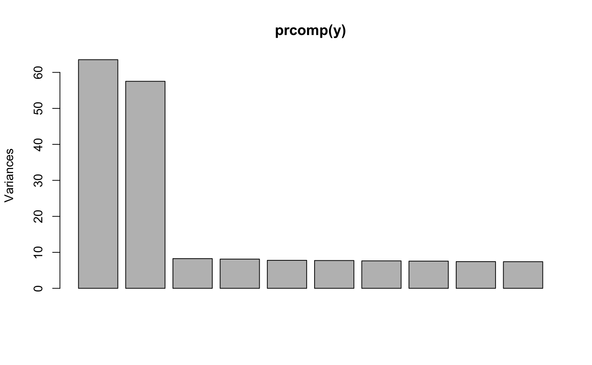

Predict polygenic scores from latent factor models
This function computes polygenic risk scores from the estimates of latent factor models. It uses the indirect' effect sizes for the regression of X (a single phenotype) on the matrix Y, for predicting phenotypic values for new genotype data.
predict_lfmm(Y, X, lfmm.object, fdr.level = 0.1, newdata = NULL)
Arguments
| Y | a response variable matrix with n rows and p columns, typically containing genotypes. Each column is a response variable (numeric). |
|---|---|
| X | an explanatory variable with n rows and d = 1 column (numeric) representing a phenotype with zero mean across the sample. |
| lfmm.object | an object of class |
| fdr.level | a numeric value for the FDR level in the lfmm test used to define candidate variables for predicting new phenotypes. |
| newdata | a matrix with n rows and p' columns, and similar to Y, on which predictions of X will be based. If NULL, Y is used as new data. |
Value
a list with the following attributes:
prediction: a vector of length n containing the predicted values for X. If newdata = NULL, the fitted values are returned.
candidates: a vector of candidate columns of Y on which the predictions are built.
Details
The response variable matrix Y and the explanatory variable are centered.
Examples
library(lfmm) ## Simulation of 1000 genotypes for 100 individuals (y) u <- matrix(rnorm(300, sd = 1), nrow = 100, ncol = 2) v <- matrix(rnorm(3000, sd = 2), nrow = 2, ncol = 1000) y <- matrix(rbinom(100000, size = 2, prob = 1/(1 + exp(-0.3*(u%*%v + rnorm(100000, sd = 2))))), nrow = 100, ncol = 1000) #PCA of genotypes, 2 main axes of variation (K = 2) plot(prcomp(y))## Simulation of 1000 phenotypes (x) ## Only the last 10 genotypes have significant effect sizes (b) b <- matrix(c(rep(0, 990), rep(6000, 10))) x <- y%*%b + rnorm(100, sd = 100) ## Compute effect sizes using lfmm_ridge mod <- lfmm_ridge(Y = y, X = x, K = 2) x.pred <- predict_lfmm(Y = y, X = x, fdr.level = 0.25, mod) <<<<<<< HEAD x.pred$candidates#> [1] 998 1000 991 995 993======= x.pred$candidates#> [1] 999 996 994 998 820 127 444 421 997>>>>>>> 334de6581f8a3ceeef30ca9a8404c65823dad06c ##Compare simulated and predicted/fitted phenotypes plot(x - mean(x), x.pred$pred, pch = 19, col = "grey", xlab = "Observed phenotypes (centered)", ylab = "Predicted from PRS")abline(0,1)abline(lm(x.pred$pred ~ scale(x, scale = FALSE)), col = 2)